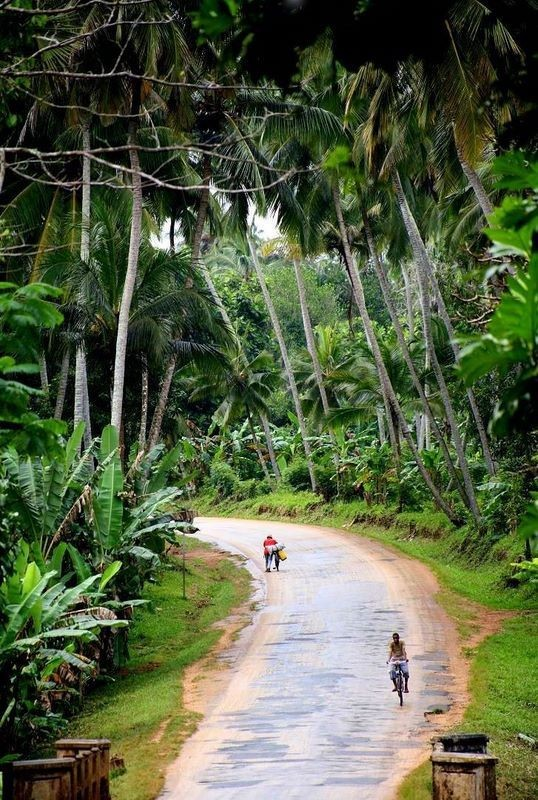
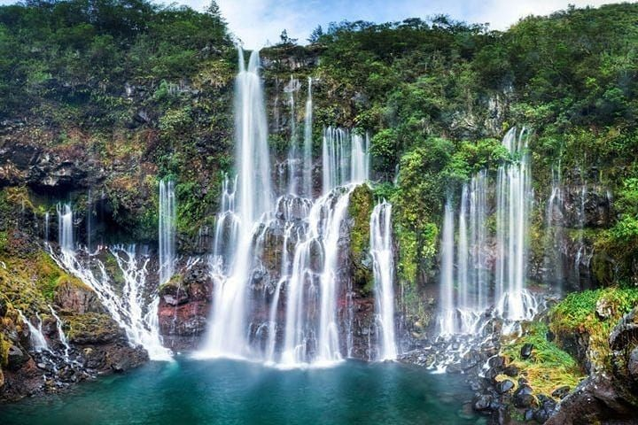
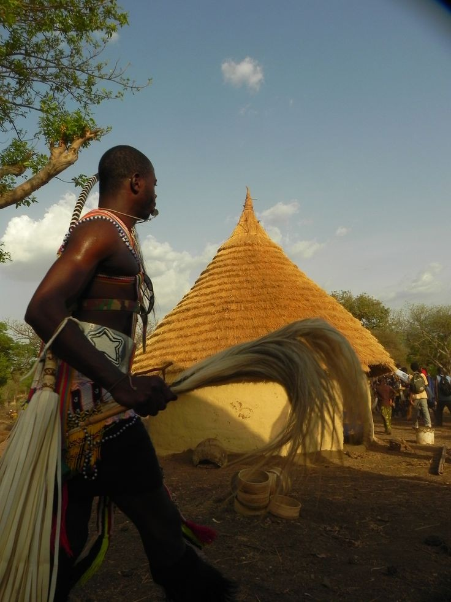
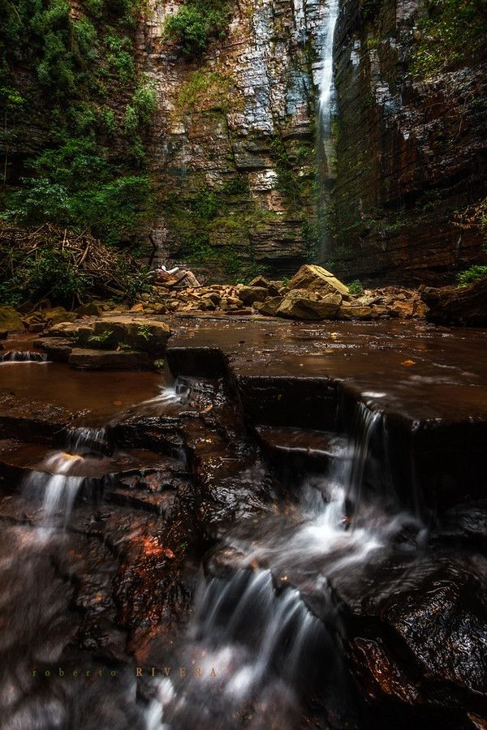
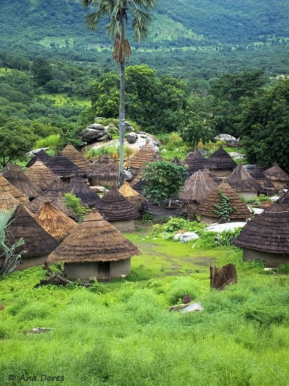
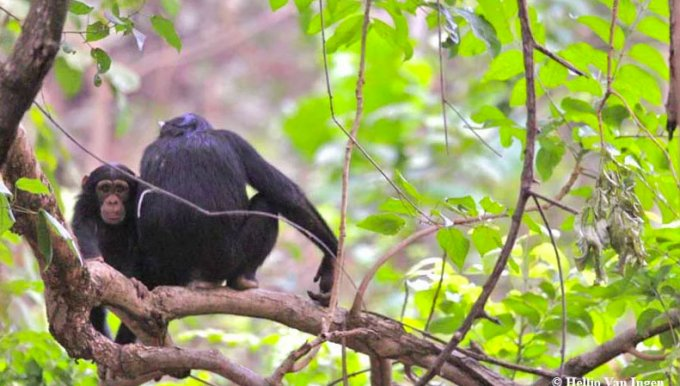
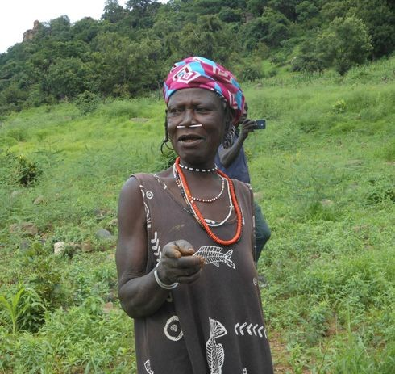

DINDEFELO

Découvert entre 1921 et 1923 par un chasseur du nom de Manga Dian Pathé Traoré, Dindéfélo est aujourd’hui une de ces merveilles de la nature qui fait la fierté du Sénégal. Situé dans la région de Kédougou au sud-est du Sénégal, à 10 heures de voiture de Dakar, la cascade prend sa source à 318 m d’altitude au mont Dandé, au cœur d’une végétation luxuriante et d’un relief accidenté qui demande un véritable parcours du combattant avant de se laisser découvrir.
Dans cette localité où la nature est d’une générosité extrême, le site semble placer des garde-fous pour rendre difficile son accessibilité et protéger ses richesses. Mais une fois sur place, la merveille semble reconnaitre votre bravoure et vous offre un spectacle inédit propice à la relaxation, la détente, la méditation...

Il règne, en effet, une douceur à nulle autre pareille à l'intérieur de la cascade. D'ailleurs, en s'approchant de la chute, on sent la température diminuer nettement. Et en arrivant sur les lieux, c'est une véritable bouffée de fraîcheur qui accueille le visiteur. Avec une température idéale, les eaux de la piscine sont aussi propices à la baignade et on a du mal à quitter l'eau, une fois qu'on plonge dans sa douce fraîcheur. L'eau de Dindéfélo est aussi d'une saveur douce. D'ailleurs, il est fortement conseillé de se baigner dans la piscine et d'en boire l'eau. La légende dit en effet qu'elle est bonne pour la santé. Selon l’enseignant et PCR Kikala Diallo, le débit de la cascade est plus important de juillet à novembre.

Dindéfélo, comme pour dire au pied de la montagne en langue peul, est cette célèbre cascade qui fait l’attraction du pays Bassari. Tel un joyau caché au fin fond d’un labyrinthe, Dindéfélo se fait toujours désirer avant de vous accueillir dans son havre de paix, de quiétude, de fascination…

Sous l’effet des rayons de soleil sur les magnifiques chûtes d’eau frétillantes à 120 m, ce petit « jardin d’eden », berce ses visiteurs et leur permet de profiter d’une agréable baignade dans un grand bassin. Dans cette spacieuse piscine naturelle, la température est généralement moyenne, et une sensation de vous retrouver dans un espace béni par les génies de l’eau peu vous habiter. D’ailleurs la légende raconte que ce « rituel de bain mystique » au pied de la montagne est fortement recommandé aux visiteurs car cette source aurait des vertus thérapeutiques et d’autres bienfaits.

Hormis la cascade, la localité a sa réserve naturelle communautaire composée de chimpanzés, de panthères, d’oiseaux, d’espèces mammifères, de singes... Et pour mieux intégrer et comprendre les lieux, un détour dans le village du même nom logé dans l’un des francs de la colline s’impose. Peuplée de Bédicks, Bassaris, Kognaguis, peuls, cette localité qui partage ces merveilles avec les villages de Ethiolo, Iwol, Salémata, Bandafassi, fongolembi, est une vitrine authentique des peuples du Sénégal oriental…, à découvrir absolument!

Sur la route de Tambacounda à Kedougou, après la traversée du Niokolo, avant le passage de la Gambie au gué de Mako, un groupe de villageois s'étend sur quelques dix kilomètre (Segeko, Nyéméneké, Sibikili) où voisinent islamisés et animistes: Malinké, Bassari, Peulh, Diakhanké. Une série d'enquête a été fait, de 1961 à 1965, sur le village le plus ancien: Sibikili. Le vieux Boussary conservait le culte rendu par les Malinké et les Bssari au génie de l'eau perénne. Cette agglomération, éloignée de tout autre peuplement, est bien privilégiée pour l'etude les relations entre ethnies et l'interêt s'accroit du fait d'une décision administrative récente de regroupement et de développement avec la création des marchés.
